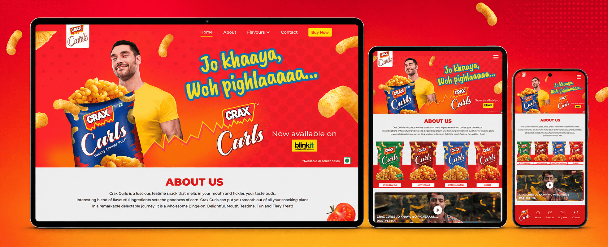
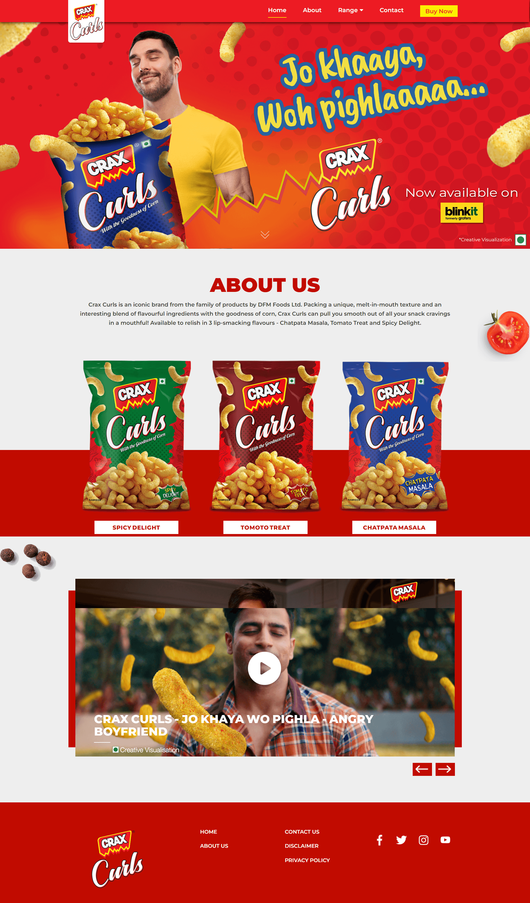
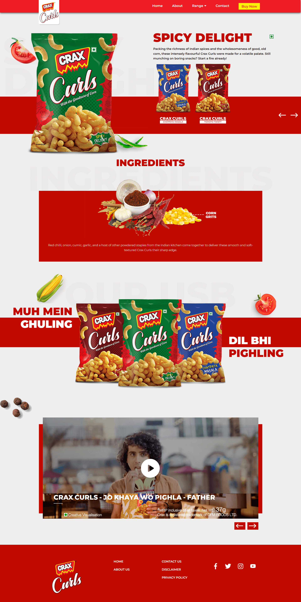

Translate a melt-in-mouth product quality into visual language without relying on dense explanation.
← Back to workMelt the craving.
CRAX Curls · Product Website
Melt the craving.
Move the mood.

Project overview
Soft in texture.
Strong in character.
CRAX Curls brings corn-based puffs, melt-in-mouth texture and playful flavours together in one instantly expressive snack.
The website turns that sensory difference into a clear digital journey—moving from the central promise into flavour discovery, ingredients, campaign films and purchase action without losing its lightness.
- Promise
- Melt-in-mouth
- Range
- Three Flavours
- Content
- Product + Film
- Build
- Responsive
The sensory idea
Muh mein ghuling.
Dil bhi pighling.
The product truth becomes the interface behaviour: bold forms, floating curls and generous transitions make the experience feel soft, playful and immediate.
Rather than adding complexity, every visual cue returns attention to texture, flavour and the pleasure of the bite.
The experience challenge
Express the feeling.
Keep the path effortless.
Separate three distinctive tastes while keeping navigation, pack recognition and the brand promise connected.
The flavour spectrum
Three routes.
One smooth finish.
Spicy Delight
Indian spice warmth with a sharper edge.
Tomato Treat
Tangy tomato flavour with familiar masala notes.
Chatpata Masala
A lively blend of Indian masalas and corn.
The website experience
A brand world first.
Product proof next.
The homepage introduces personality, range and film in one flowing story. Dedicated product pages add ingredient context, flavour cues and easy movement across the range.
Homepage journeyPromise, flavours and campaign storytelling

Flavour journeyProduct, ingredients and adjacent choices

The digital path
Feel. Choose.
Know. Enjoy.
- 01
Feel
Campaign imagery establishes the mood immediately.
- 02
Choose
Pack colour makes flavour comparison quick.
- 03
Know
Ingredient-led pages add useful product depth.
- 04
Enjoy
Films and purchase actions extend the journey.
The outcome
A soft product truth.
A sharp digital identity.
A responsive destination that turns texture into character, flavour into navigation and campaign energy into a coherent product experience.
Clear distinction
The melt-in-mouth promise leads every part of the experience.
Easy range discovery
Colour and pack cues keep three flavour journeys intuitive.
Connected storytelling
Product, ingredients and film work as one brand destination.
Light in the mouth.Long in the memory.
Turning product truth into experience?